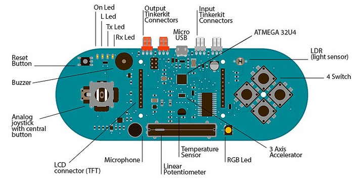

The Arduino Esplora is a microcontroller board derived from the Arduino Leonardo.
The Esplora differs from all preceding Arduino boards in that it provides a number of built-in, ready-to-use set of onboard sensors for interaction. It's designed for people who want to get up and running with Arduino without having to learn about the electronics first.
The Esplora has onboard sound and light outputs, and several input sensors, including a joystick, a slider, a temperature sensor, an accelerometer, a microphone, and a light sensor. It also has the potential to expand its capabilities with two Tinkerkit input and output connectors, and a socket for a color TFT LCD screen.
Like the Leonardo board, the Esplora uses an Atmega32U4 AVR microcontroller with 16 MHz crystal oscillator and a micro USB connection capable of acting as a USB client device, like a mouse or a keyboard. In the upper left corner of the board there is a reset pushbutton, that you can use to restart the board.
The board contains everything needed to support the microcontroller; simply connect it to a computer with a USB cable to get started. The Esplora has built-in USB communication; it can appear to a connected computer as a mouse or keyboard, in addition to a virtual (CDC) serial / COM port.
